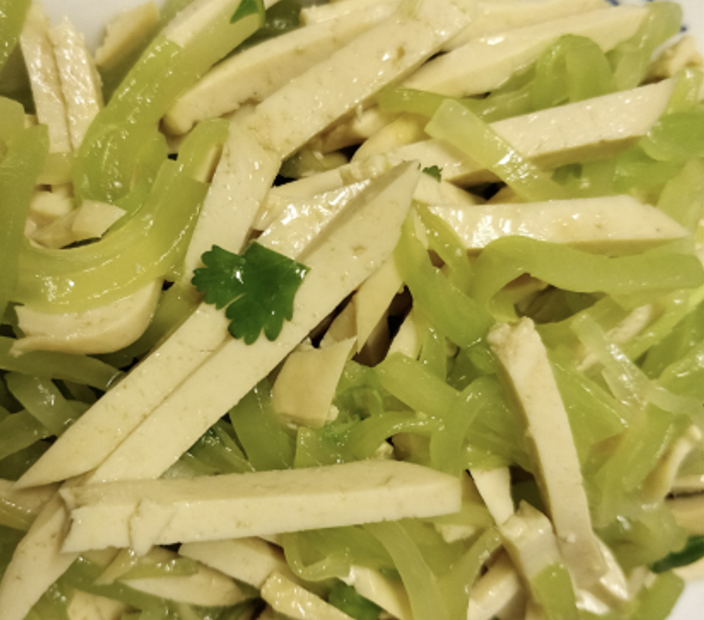

#26 - ASPARAGUS LETTUCE AND TOFU SALAD - 窩筍拌素雞
Asparagus lettuce is the stem of a special variety of lettuce. The stem is about 1 ½ - 2 inches in diameter and in the shape of an asparagus. Vegetarian Chicken 素雞is a seasoned firm tofu with its texture and color resembles chicken meat.

INGREDIENTS:
- 1 Asparagus lettuce
- 2 vegetarian chicken 素雞
- 1 green onion chopped
- 1 cilantro chopped
- ½ tsp salt
- 2 TBSP vegetable oil
- 1 tsp sugar
- A few drops sesame oil
Directions:
- Peel of the skin of asparagus lettuce using a vegetable peeler. Remove all whitish hard fibers running along the stem.
- Rinse in water and slice into 2-inch-long julienne slices.
- Put in in a bowl and add ½ tsp of salt. Mix well and let it rest in the refrigerator for 2 hours.
- Steam the vegetarian chicken for 15 min and let cool completely.
- Cut it into similar size as the asparagus lettuce. Set aside.
- Take out the asparagus lettuce. Put it in a cheesecloth and squeeze out some excessive water.
- Put it in a plate with chopped green onion on top.
- Heat up 2 TBSP vegetable oil. Pour the oil onto the asparagus lettuce with the green onion on top. It should sizzle.
- Mix well.
- Add in the vegetarian chicken, then the sugar and sesame oil. Toss gently.
- Top with chopped cilantro.
(Serves 1 person)
Note:
- The different names for asparagus lettuce are: stem lettuce, celery lettuce, and celtuce.